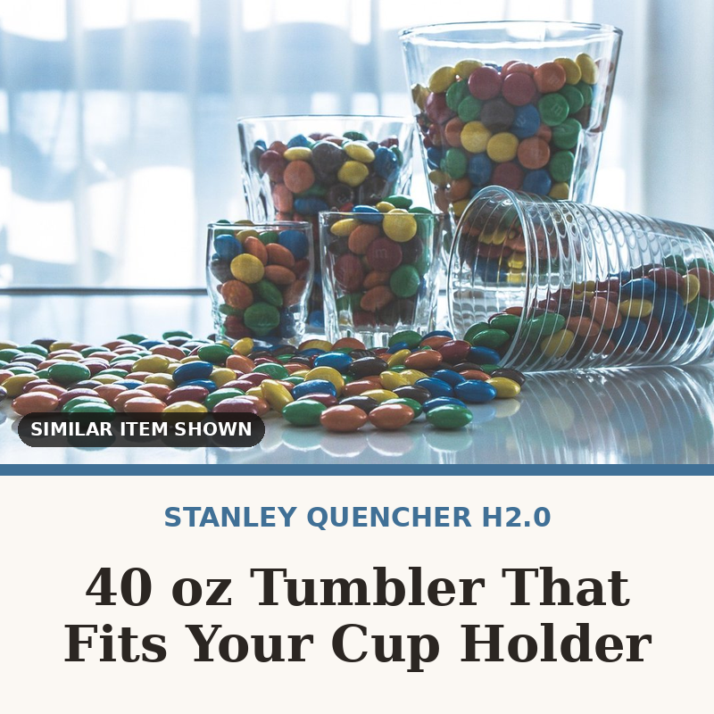

STANLEY Quencher H2.0 FlowState Tumbler, 40 oz
Holds 40 ounces with a handle and a three-position lid, and the narrow base still drops into a car cup holder. Double-wall vacuum insulation keeps ice around for hours, and it goes in the dishwasher.
Check price on Amazon → Paid link · we may earn a commission